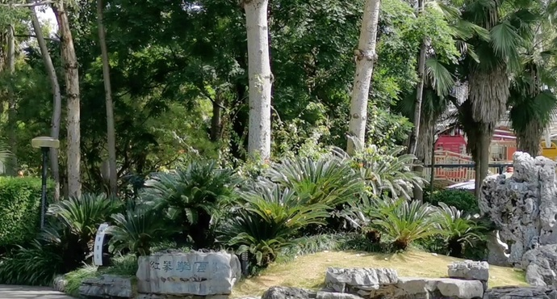
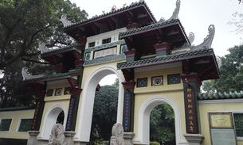
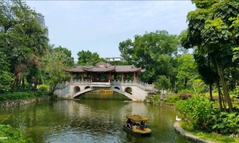

柳侯祠
LiuHouCi
 柳侯公园是为纪念唐代大文豪、曾任柳州刺史的柳宗元而建的公园，柳州市中心的城市公园，是个闹中取静的好地方。这个免费的公园有着常见的江南风格，树木参天，游人闲散，每天在此早锻炼和饭后散步的游人不少。 你可以进入柳侯祠（10元）拜一拜柳宗元的衣冠冢，瞻仰这位柳州最著名的文化名人。逛过公园，不妨沿着文惠路往南走约20分钟，到曙光路和文惠路路口的东门城楼看一看，登上这仅存的城墙，在门楼上俯瞰柳江，感觉仿佛回到古时那个万夫莫开的老城池。
门票 开放时间
具体详情请咨询景区 全天 (1月1日-12月31日 周一-周日)